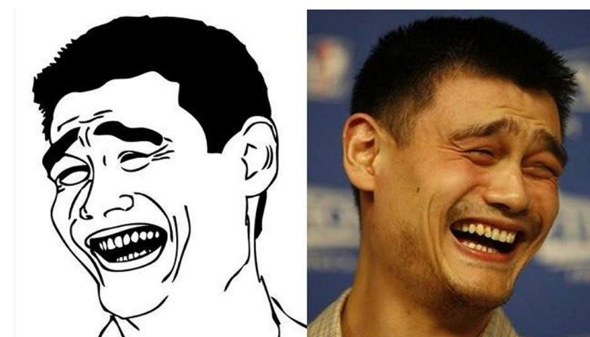

Datos de los memes
El nombre meme tiene origen en el concepto concebido por Richard Dawkins, zoólogo y científico. En su libro El gen egoísta (1976) expone la hipótesis memética de la transmisión cultural. Propone la existencia de dos procesadores informativos distintos en los seres humanos: uno actúa a partir del genoma gracias a la replicación de genes a través de las generaciones y otro actúa a nivel cerebral, replicando la información cultural del individuo, la cual es recibida por enseñanza, imitación o simple asimilación. En este caso, Dawkins nombra como «meme» a la unidad mínima de información que se puede transmitir. Según el autor, los memes conforman la base mental de nuestra cultura, como los genes conforman la primera base de nuestra vida.4 Años más tarde, el propio Dawkins describió a los memes de Internet como un «secuestro de la idea original», implicando que incluso el concepto de meme ha mutado y evolucionado por sí mismo.
Los meme ha estado ya plenamente asentados en nuestra cultura. Mas diez años en los que hemos visto el progreso del uso de las redes sociales por parte de la mayoría de las nuevas generaciones, de la que se han aprovechado para propagarse con mayor amplitud y velocidad que la que jamás hubiese soñado ninguna broma, acontinuacion te dejo nos ejemplos desde las mas clasicos has los de las nuevas generaciones.

Yao Ming
Julio de 2010. Feel old yet? Una de las más importantes encarnaciones de los memes de primera generación, popularizados gracias a Facebook y que, como ya estamos viendo, se echan de menos en un mundo en el que los memes se han vuelto unos códigos indescifrables.
This is fine
Una viñeta de 2013 del webcomic Gunshow, de K.C. Green, sumarizó cualquier situación política, la noche antes de un examen y hasta tu vida amorosa. Dime un solo reducto de tu día a día que no sea una casa en llamas.
blinking white guy
Si Math Lady nos enseñó que este era un mundo confuso, Blinking White Guy, más conocido como Drew Scanlon, nos hizo abrazarlo con optimismo y ternura en 2017. Por muy incorrecto que sea lo que te está diciendo tu interlocutor.
No lo sé rick
Sé sincero, desde 2016 no utilizas ninguna otra forma de demostrar tu incredulidad hacia hilos de Twitter, propuestas políticas o anécdotas de tus amigos.